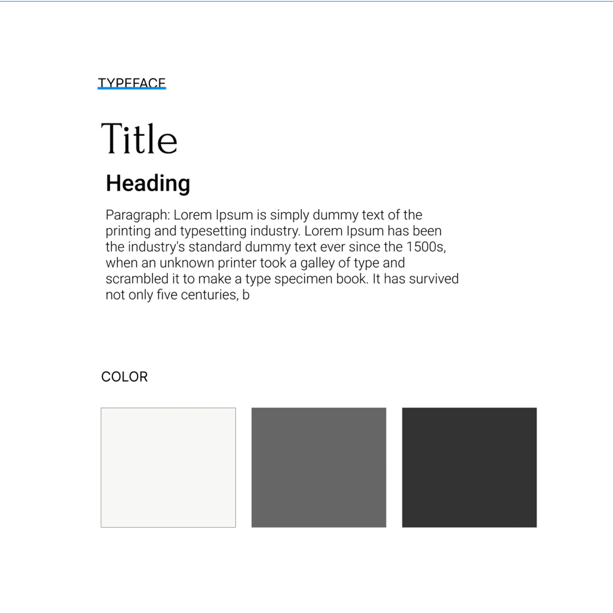
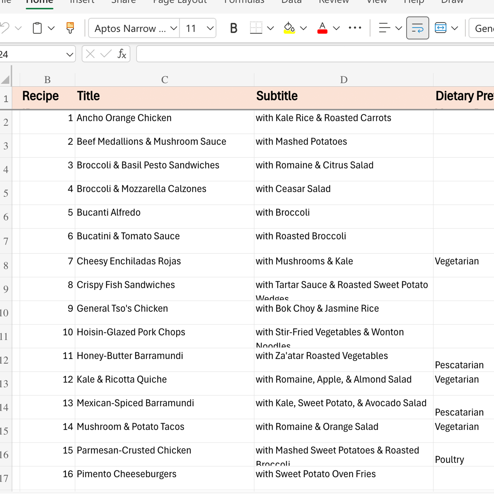
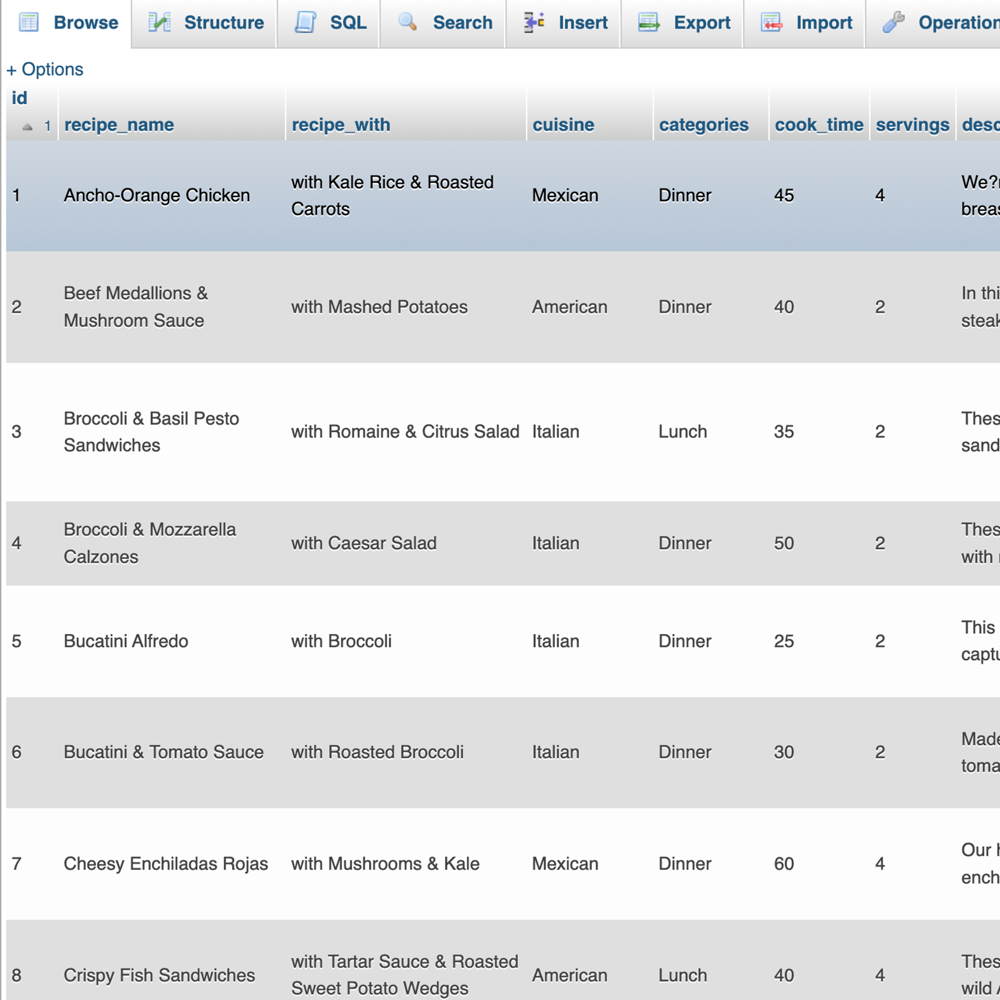
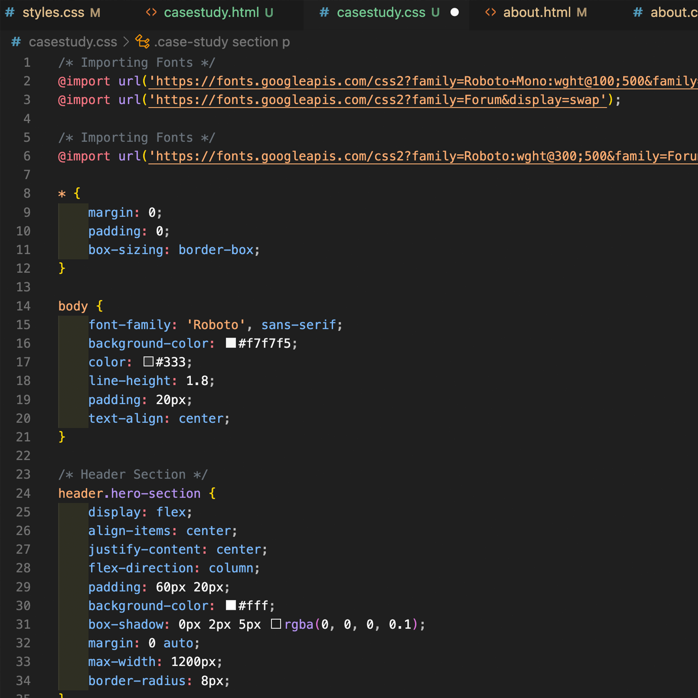

Overview
This project is a responsive and easy-to-use website designed to make exploring and finding recipes simple and enjoyable. It combines HTML, CSS, PHP, and MySQL to create a smooth experience where users can browse, search, and filter recipes based on their preferences, like cuisine type or diet. The site connects to a custom-built database that powers all the search and filter features, making it quick and efficient to find the perfect recipe. The project met all the goals of the assignment, showing both technical skills and a focus on creating a helpful and user-friendly platform.
Context & Challenge
Background: This Online Cookbook project was developed as part of a Web Scripting class taught by Professor Phil Sinatra. The goal was to transform a folder of pre-written recipes and images into a fully functional and dynamic online platform. Over the course of 10 weeks, I designed and built a responsive web application using HTML, CSS, PHP, and MySQL. The platform allows users to browse, search, and filter recipes with ease, combining functionality with an intuitive user experience. While I primarily worked on this project independently, I collaborated with classmates to organize and prepare the recipe data. This project showcases the technical and creative skills gained throughout the course.
Goals:
- Ensure the website is fully responsive across all devices.
- Enable dynamic browsing, searching, and filtering of recipes.
- Create an intuitive and user-friendly interface.
- Integrate a well-structured MySQL database for recipe management.
- Fulfill all technical and functional class requirements.
- Achieve a positive user experience and satisfaction.
Process & Insights
Design
When first starting the design of my project, I laid out a theme and style to guide the website's development. I aimed for a minimalist yet elegant aesthetic to appeal to the target audience searching for recipes with that vibe.
Excel
The next step involved gathering and organizing the recipe data for use in the database. Our class worked with PDFs containing all the recipes, which we sorted into an Excel sheet. Separately, I renamed and organized the images into folders for easy access.
Database
Once the data was organized, I imported a CSV version of the Excel sheet into phpMyAdmin. Setting up the database tables was meticulous but manageable due to the structured organization of the data in Excel.
Coding
Finally, I began coding the website. I started with HTML and CSS to establish the overall structure and design of the site. Afterward, I integrated PHP to add functionality, including dynamic recipe display and a search/filter feature.
The Solution
The final design of the online cookbook website prioritizes simplicity and usability. The clean, minimalist layout provides users with a seamless UX flow, ensuring they can browse, search, and filter recipes with ease. The navigation structure is intuitive, featuring a top menu that allows quick access to key sections such as "All Recipes" and "About Us." Each page is designed with a responsive framework, adapting flawlessly to various screen sizes, including desktops, tablets, and smartphones. This ensures that users enjoy a consistent and optimized experience, regardless of the device they are using. The combination of functionality and aesthetic appeal makes the website a practical and visually engaging platform for discovering delicious recipes.
Results
The Online Cookbook project successfully met all the objectives, including creating a responsive, user-friendly platform with dynamic features for browsing and filtering recipes. The measurable outcomes include a fully functional website with a streamlined search/filter system, efficient integration of a MySQL database, and responsive design that performs seamlessly across all devices.
Learned:This project taught me the importance of early data organization, as the well-structured Excel sheet simplified the database setup significantly. Additionally, I gained valuable experience in integrating frontend design with backend functionality, which was both challenging and rewarding